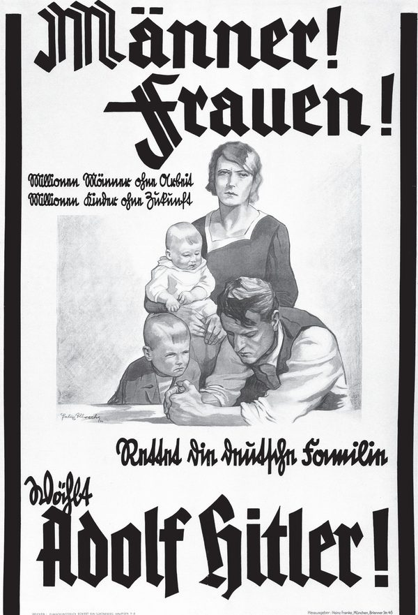
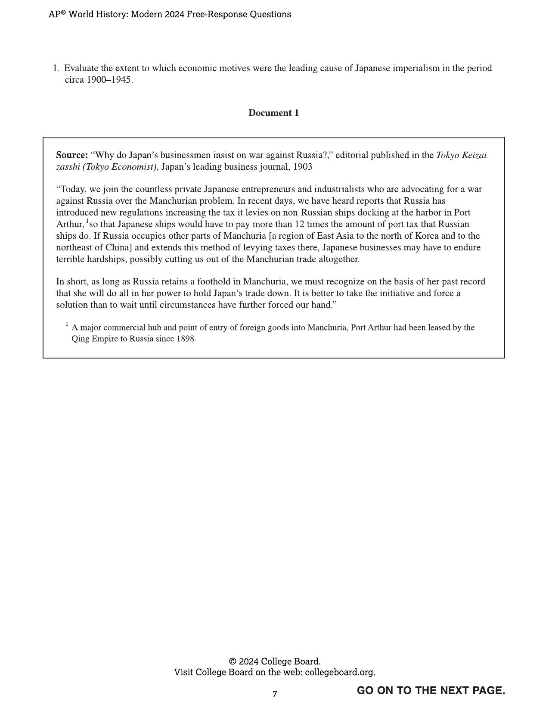
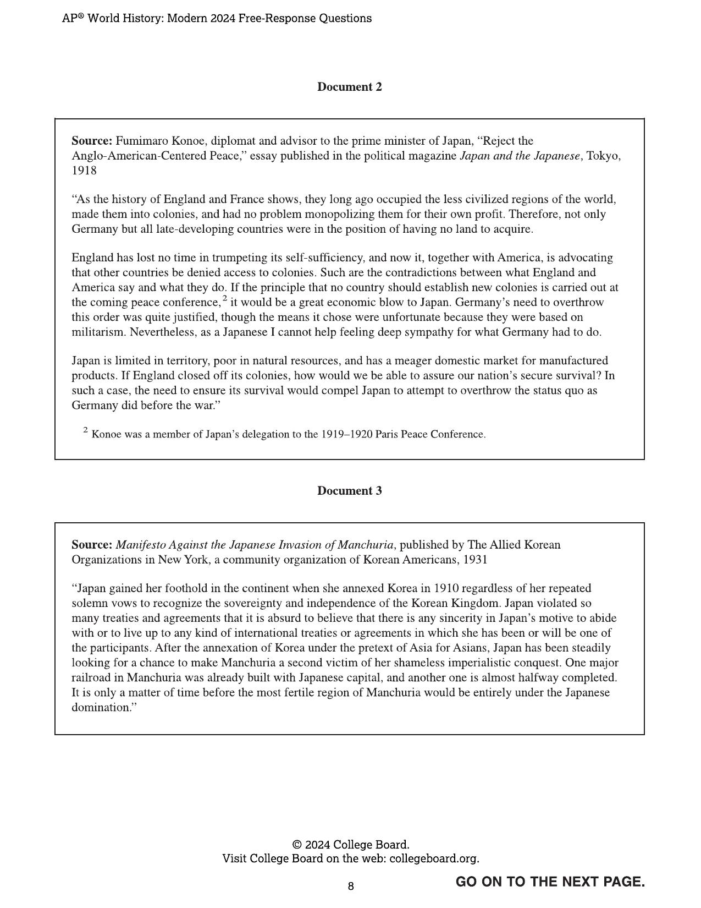
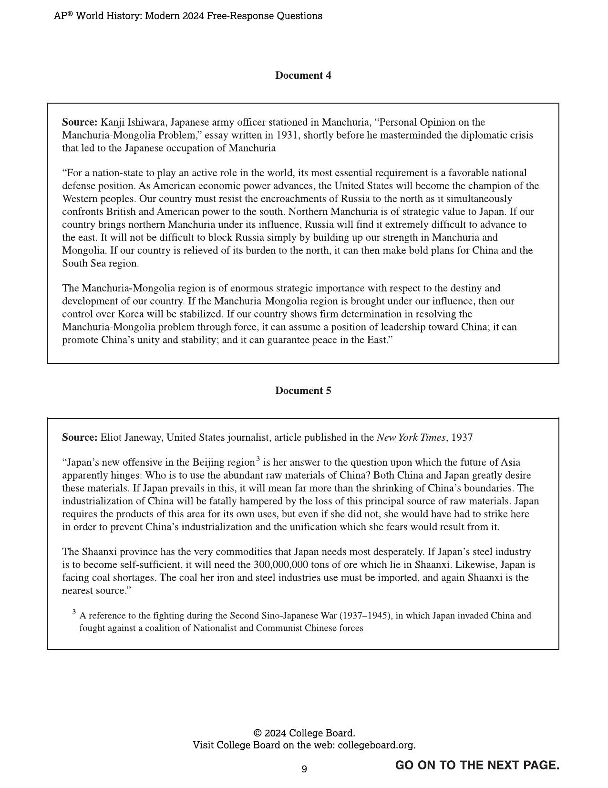
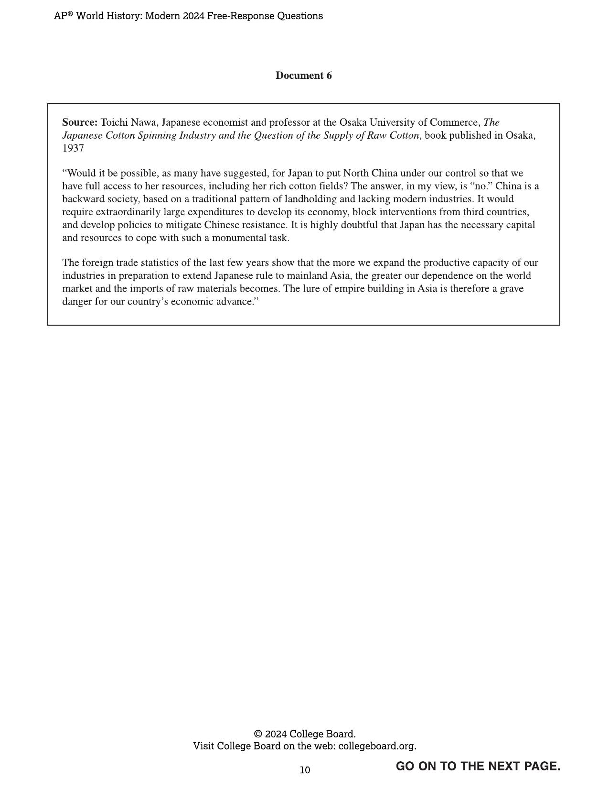
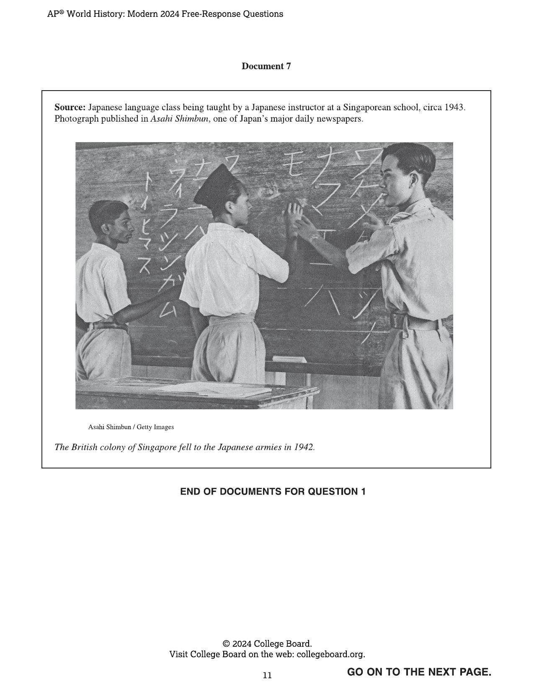

How to attack a stimulus-based MCQ
Most of these questions are not really about history. They are about decoding what is being asked. Learn the four-step habit, then watch it worked step by step on a real Unit 7 test question. Use Back and Next to move through the highlighting.
Practice every unit on the full “Attack the Stimulus MCQ” page →
From the trenches of WWI to the mushroom cloud over Nagasaki, master every source, concept, and question before exam day.
The Age of Total War
Between 1900 and 1945, the world experienced two catastrophic global wars that together killed over 70 million people. The causes were deeply rooted in the preceding century: imperial rivalries, hyper-nationalism, arms races, and the rigid alliance systems of European great powers. When Archduke Franz Ferdinand was assassinated in Sarajevo in June 1914, these pressures detonated into the most destructive war the world had ever seen.
WWI shattered the old European order. The Ottoman, Austro-Hungarian, Russian, and German empires all collapsed. The harsh terms of the Versailles Treaty, combined with the global Great Depression of the 1930s, created the economic and psychological conditions in which fascism could flourish. Hitler's rise in Germany, Mussolini's in Italy, and militarism in Japan produced leaders willing to gamble civilization itself on conquest.
World War II was even more total than the first, civilian populations were deliberate targets. The Holocaust, the Japanese war in China, and Allied strategic bombing campaigns killed millions of non-combatants. The war ended with atomic weapons deployed against Japanese cities, inaugurating the nuclear age and setting the stage for the Cold War that would define the second half of the 20th century.
A World at War
Trace World War I, the revolutions that toppled old empires, the interwar crisis, and World War II in Europe and the Pacific, then layer on key battles, mass atrocities, mandates, and colonial troops. Click anything to read more.
Watch Before the Exam
Full Unit 7 review videos to reinforce everything you’ve studied.
Covers WWI causes, total war, the interwar period, WWII, mass atrocities, and the rise of nationalist movements worldwide.
Jim Rhoades’ full content review of Unit 7, a structured walkthrough of the unit’s key developments.
Jim Rhoades’ thematic review of Unit 7, the same material organized around the AP course themes.
Heimler’s History Topic-by-Topic Video Review click to expand ▾
Steve Heimler’s topic-by-topic walkthrough of Unit 7, one short video per topic (7.1–7.8). Perfect for reviewing a single concept at a time. Heimler numbers these by his own topic list, so his numbers may not match this site’s topics exactly.
The Story of Global Conflict
Nine turning points that reshaped the world, scroll to explore.
Ready to Master Unit 7?
Flashcards, MCQ, writing practice, and study guide, all in one place.
Key Terms & Concepts
Think of the answer before the timer runs out, then show it and rate yourself honestly. Cards you rate Shaky or Guessing come back sooner.
A World at War
Trace World War I, the revolutions that toppled old empires, the interwar crisis, and World War II in Europe and the Pacific, then layer on key battles, mass atrocities, mandates, and colonial troops. Click anything to read more.
Every Term You Need to Know
All of the unit's key terms, A to Z. Filter by word or by topic.
Write What You Know
Pick a topic, then write everything you remember for 5 minutes. When time's up, we'll show you all the content so you can compare.
Stimulus-Based Questions
AP-authentic questions using the exact stimuli from your test and study materials. Choose Quick Check for instant feedback, or Test Mode to answer a full set, rate your confidence, and reveal your score at the end, closer to real exam conditions.
SAQ, DBQ & LEQ
Real AP exam prompts from the official College Board scoring materials. Write your response, check it against the rubric checklist, then score yourself using the model answer.

National Socialist (Nazi) Party election poster, Germany, 1932. Text reads: “Men! Women! Millions of men without work. Millions of children without a future. Save the German family. Vote Adolf Hitler!”
B. Explain ONE way the image illustrates the economic situation of the period after the First World War. (1 point)
C. Explain ONE way the rise of the German National Socialist Party led to the Second World War. (1 point)
Show model answer
A. The poster’s political purpose was to win votes for Adolf Hitler and the Nazi Party in the 1932 election by blaming the Weimar government for Germany’s unemployment.
B. The poster shows a struggling family and says that millions of German men were out of work, which reflects the mass unemployment of the Great Depression. Germany’s economy had already been weakened by the reparations required by the Treaty of Versailles, so when American loans dried up after the 1929 crash, unemployment soared to around six million by 1932.
C. After taking power in 1933, the Nazis rearmed Germany in violation of the Treaty of Versailles because Hitler wanted to overturn the treaty and win “living space” in Eastern Europe. This expansion led Germany to annex Austria and the Sudetenland in 1938 and then invade Poland in 1939, which caused Britain and France to declare war.
Model answer written for this site in the class formulas from the Writing Guide.
Evaluate the extent to which economic motives were the leading cause of Japanese imperialism in the period circa 1900–1945.





Show model answer
In the decades surrounding this topic, industrialized Western powers built vast empires in Asia and Africa, and Japan, after the Meiji Restoration of 1868, industrialized rapidly so that it would not be colonized itself. Japan copied Western models of industry, military organization, and empire, defeating China in 1895 and taking Taiwan. Because Japan was a small island nation with few natural resources, its growing factories depended on imported coal, iron, and cotton. This wider situation is the backdrop against which Japanese imperialism from 1900 to 1945 should be understood. Economic motives were largely the leading cause of Japanese imperialism, as seen through Japan’s need for raw materials for its industries and the business community’s push to protect its trade in Manchuria.
One way economic motives drove Japanese imperialism was through the need for raw materials, as seen in Documents 2, 5, and 6, which show Japan’s lack of resources and its dependence on imports. Document 5 is a 1937 New York Times article explaining that Japan’s offensive in northern China aimed to control the iron ore and coal of Shaanxi province, which Japan’s steel industry desperately needed. This document supports my argument because it demonstrates that Japan’s war in China was tied directly to resources for its industries. The author of Document 5 is an American journalist writing for American readers. Therefore, he may emphasize Japan’s hunger for raw materials, which means he presents the invasion mainly as a resource grab. This supports my argument because even an outside observer saw economics at the heart of Japanese expansion. Document 1 is a 1903 editorial in Japan’s leading business journal arguing that Japanese businessmen wanted war with Russia because Russian port taxes threatened to cut Japan out of the Manchurian trade. This document supports my argument because it demonstrates that business interests pushed for expansion decades before the 1930s.
Strategic and nationalist motives also mattered, as seen in Documents 3, 4, and 7, which show Japan seeking security against Russia and spreading its culture in conquered lands. Document 4 is a 1931 essay by Kanji Ishiwara arguing that Japan needed northern Manchuria to block Russia and stabilize its control over Korea. The author of Document 4 is a Japanese army officer stationed in Manchuria. Therefore, he may emphasize military security over trade, which means his essay shows how the army justified expansion as national defense. This qualifies my argument because military leaders, not just businessmen, pushed for empire. Document 7, a photograph of a Japanese language class in occupied Singapore published in a major Japanese newspaper, also shows Japan presenting itself as the leader of Asia while imposing its language.
An additional piece of evidence that supports my argument that economic motives were the leading cause is the U.S. oil embargo of 1941, which cut off most of Japan’s oil and led Japan to plan the conquest of the oil-rich Dutch East Indies. This evidence supports my argument because it demonstrates how Japan’s need for raw materials drove its expansion into Southeast Asia and its attack on Pearl Harbor.
Economic and strategic motives were intertwined, and even some Japanese experts doubted that empire paid. Konoe (Doc 2) blended economic fears with resentment of British and American power, while the economist Toichi Nawa (Doc 6) warned that empire building made Japan more dependent on imported raw materials, not less. This shows that economic motives drove imperialism largely because leaders believed empire would bring security, even when the economics did not add up.
Model answer written for this site in the class formulas from the Writing Guide.
“In the period after 1900, the role of the state in the economy varied, with many states adopting policies to control or manage their economies.
Develop an argument that evaluates the extent to which one or more states controlled their economies in this time period.”
Show model answer
Before 1900, most industrialized countries followed laissez-faire ideas, associated with Adam Smith, that governments should stay out of the economy. Industrialization created great wealth but also harsh working conditions and inequality, which led Karl Marx and other socialists to argue that workers or the state should control production. Some states, such as Meiji Japan, had already used government support to build industry quickly. This set the stage for the twentieth century because governments now had both a reason and a model for taking a larger role in their economies. Many states largely controlled their economies in this period, as seen through the Soviet Union’s Five-Year Plans and China’s Great Leap Forward.
Stalin’s Five-Year Plans support my argument that many states largely controlled their economies because they demonstrate how, beginning in 1928, the Soviet government set production targets for every factory, collectivized farms, and poured resources into heavy industry such as steel and coal. Because the state controlled all investment, the Soviet Union industrialized rapidly, but forced collectivization led to a famine that killed millions, especially in Ukraine.
Mao’s Great Leap Forward supports my argument because it demonstrates how, beginning in 1958, the Chinese Communist Party organized peasants into huge communes and ordered them to produce steel in backyard furnaces. Because the state controlled planting and labor, local officials reported false harvests to meet their targets, which resulted in a famine that killed tens of millions of people.
State control varied in degree and changed over time. In response to the Great Depression, democracies also expanded state control without abolishing private property: Franklin Roosevelt’s New Deal created public works and regulated banks, and after 1945 Britain nationalized coal, railways, and steel and built a welfare state. Later, many states reduced their control, as China under Deng Xiaoping introduced market reforms after 1978, which shows that state control of economies rose and then fell across the twentieth century.
Model answer written for this site in the class formulas from the Writing Guide.
Practice One Skill at a Time
Isolate each rubric point, see what earns it, and get targeted feedback on just that skill.
- Makes a historically defensible claim, does not merely restate or rephrase the prompt
- Establishes a line of reasoning: gives a reason for the claim OR sets up analytic categories
- Use an evaluative adverb: significantly, primarily, largely, fundamentally, to a great extent, to a limited extent
- Can appear in the intro OR conclusion
- Describes a broader historical context, more than a phrase or one-sentence mention
- Relates to events/developments/processes before, during, or after the time frame of the prompt
- Must be relevant to the prompt, not just any historical background
- Must include elaboration connecting the context to the topic
- 1 pt: Provide at least two specific historical examples relevant to the prompt
- 2 pts: Use those examples to support an argument, each piece connects to a claim with explanation
- Evidence must be specific: names, dates, policies, events, not vague generalizations
- Must be described AND explained, don’t just list facts
- For at least 2 documents, explain how the document’s Historical situation, Intended audience, Purpose, or Point of View is relevant to an argument
- Must explain HOW or WHY, not just identify. The “which means” anchor forces the second move: “[feature] is [X], which means [consequence for argument].”
- The explanation must connect to your argument about the prompt, the sourcing sentence must do work, not just exist
Step 3: write HIPP analysis for two different documents from the DBQ above. Label each (e.g. “Doc 1:” and “Doc 4:”). You can use different lenses for each.
- Qualify or modify your argument, acknowledge nuance, exceptions, or counterevidence
- Analyze multiple causes/effects, multiple variables, or diverse perspectives
- Make insightful connections across time or geography linked to your argument
- Must be part of the argument, not just a closing phrase
- 1 pt: Reasoning: use a historical reasoning skill (comparison, causation, or continuity & change) to frame or structure the argument, even if uneven
- 1 pt: Complexity: demonstrate a complex understanding: corroborate, qualify, or modify the argument using evidence, sustained across the essay
- This is your lowest-scoring LEQ row on the exam, it is worth deliberate practice
- Neither half can be honestly auto-graded, so this drill coaches you to self-assess instead of faking a score
- Part A: Identify: 1–2 sentences. State a specific political purpose of the Nazi poster.
- Part B: Explain: 2–3 sentences with causal language. HOW does the image illustrate post-WWI economic conditions?
- Part C: Explain: 2–3 sentences with causal language. ONE way the Nazi Party’s rise led to WWII.
Text reads: “Men! Women! Millions of men without work. Millions of children without a future. Save the German family. Vote Adolf Hitler!” Nazi Party, 1932
Unit 7: Global Conflict
Click each topic to expand the full summary and key terms.
SPICE-T Analysis
Unit 7: Global Conflict (c. 1900–c. 1945) through the AP World History thematic lens.
Go Beyond Identification
Don't just name the source feature, explain why it matters for your argument. Practice the "which means" move.
Myth Sweeper: Interrogate
Sweep a minefield of Unit 7 claims, judge each Fact or Myth, then pick the real correction. Miss a fix and the myth detonates.
Front Line
Drive a tank across the Western Front, North Africa, and the Eastern Front, steering around barbed wire, tank traps, and supply trucks, then switch into the lane with the right answer at each checkpoint gate. Catch shields, coin magnets, and the airship lift; three wrong gates and you retreat.
Test Your Knowledge
Choose a game mode to review Unit 7 with your class or on your own.
Class Slides
Your full lecture slides alongside topic-by-topic analysis notes. Use these to review key arguments, vocabulary, and connections.
Visual Sources & HIPP Analysis
7 AP-authentic visual stimuli: photographs, lithographs, maps, and paintings. Study each source, answer the AP question, then complete your own HIPP analysis and compare to the model.